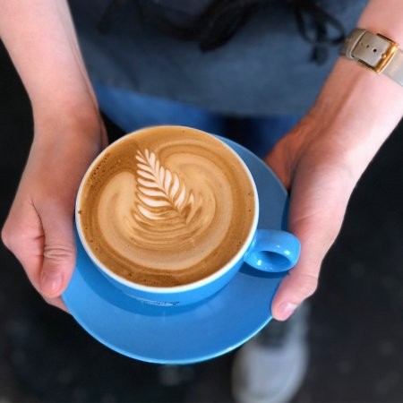
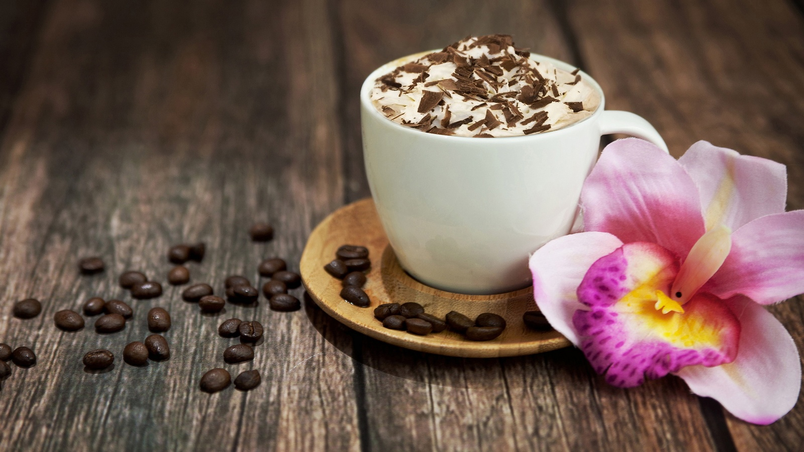
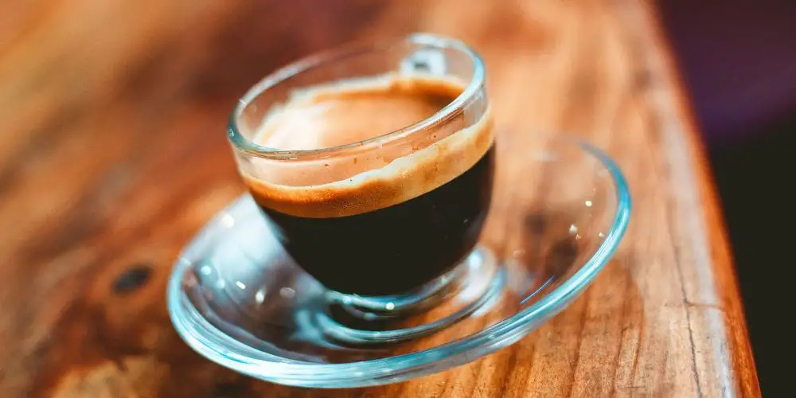
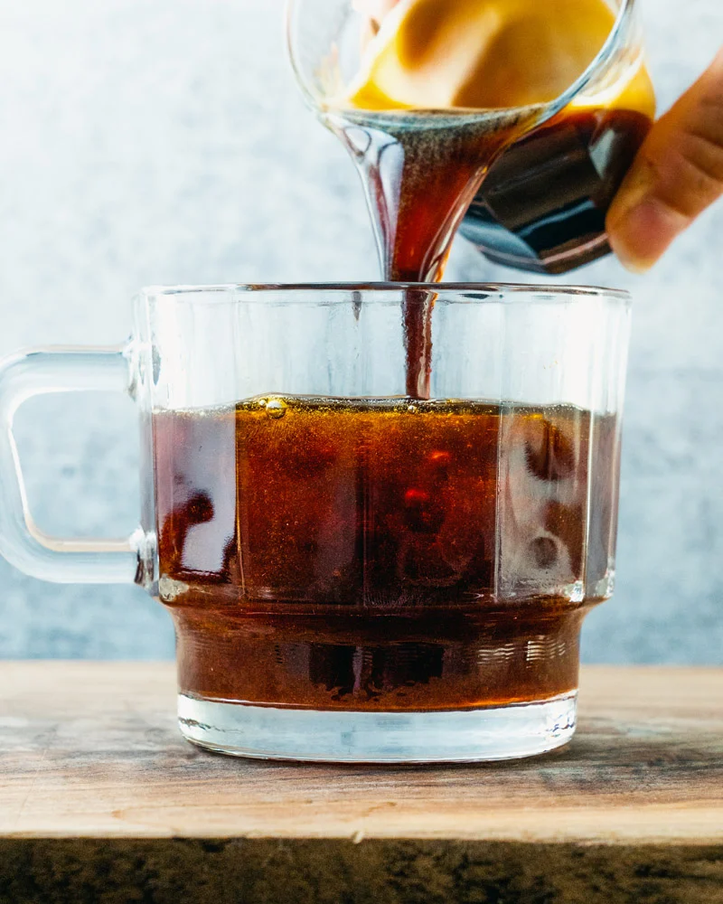
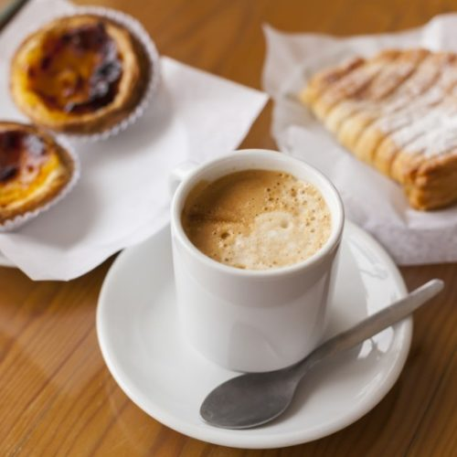
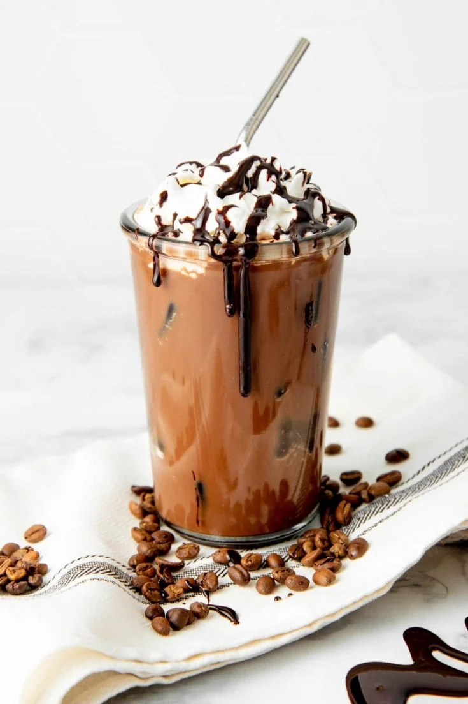
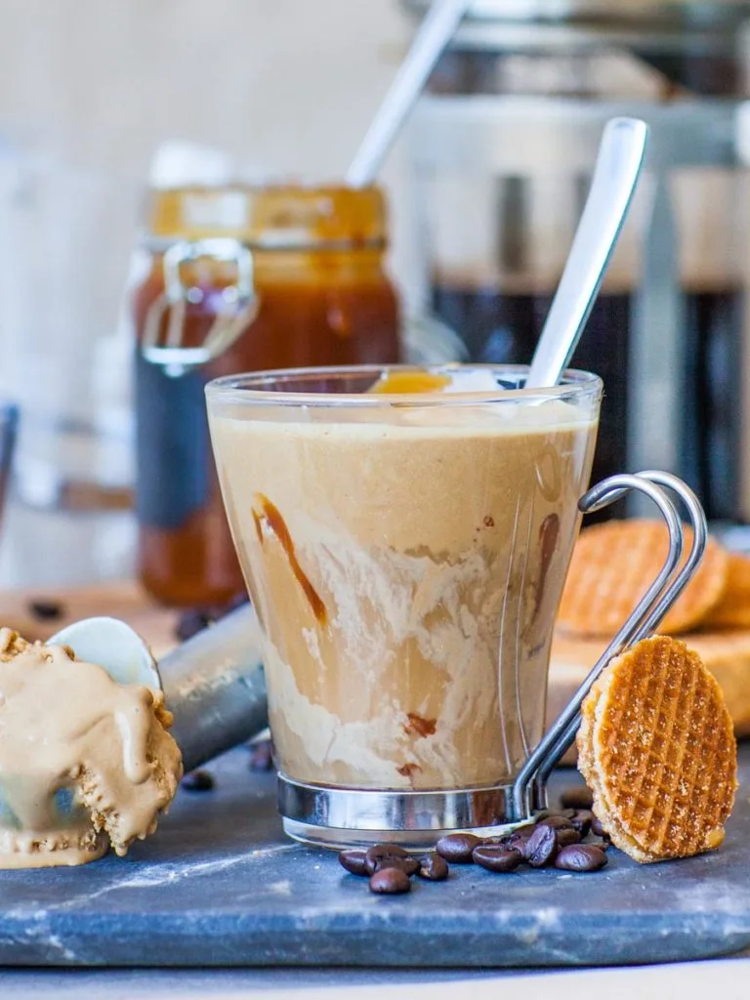

Coffee is a brewed drink prepared from roasted coffee beans, the seeds of berries from certain flowering plants in the Coffea genus. From the coffee fruit, the seeds are separated to produce a stable, raw product: unroasted green coffee. The seeds are then roasted, a process which transforms them into a consumable product: roasted coffee, which is ground into fine particles that are typically steeped in hot water before being filtered out, producing a cup of coffee.
Coffee is darkly colored, bitter, slightly acidic and has a stimulating effect in humans, primarily due to its caffeine content.[3] It is one of the most popular drinks in the world[4] and can be prepared and presented in a variety of ways (e.g., espresso, French press, caffè latte, or already-brewed canned coffee). It is usually served hot, although chilled or iced coffee is common. Sugar, sugar substitutes, milk or cream are often used to lessen the bitter taste or enhance the flavor. It may be served with coffee cake or another sweet dessert, like doughnuts. A commercial establishment that sells prepared coffee beverages is known as a coffeehouse or coffee shop (not to be confused with Dutch coffeeshops selling cannabis).
Clinical research indicates that moderate coffee consumption is benign or mildly beneficial as a stimulant in healthy adults, with continuing research on whether long-term consumption reduces the risk of some diseases, although some of the long-term studies are of questionable credibility.[5]
The earliest credible evidence of the drinking of coffee in the form of the modern beverage appears in modern-day Yemen from the middle of the 15th century in Sufi shrines, where coffee seeds were first roasted and brewed in a manner similar to current methods.[2] The Yemenis procured the coffee beans from the Ethiopian Highlands via coastal Somali intermediaries and began cultivation. By the 16th century, the drink had reached the rest of the Middle East and North Africa, later spreading to Europe.
TYPES OF COFFEE
BLACK COFFE
Black coffee is simply coffee that is normally brewed without the addition of additives such as sugar, milk, cream, or added flavors. While it has a slightly bitter taste compared to when it is flavored with additives, many people love a strong cup of black coffee. In fact, for some, it is part of their everyday diet.

LATTE
As the most popular coffee drink out there, the latte is comprised of a shot of espresso and steamed milk with just a touch of foam. It can be ordered plain or with a flavor shot of anything from vanilla to pumpkin spice. (Here’s how to make a copycat Starbucks pumpkin spice latte.)

Cappuccino
Cappuccino is a latte made with more foam than steamed milk, often with a sprinkle of cocoa powder or cinnamon on top. Sometimes you can find variations that use cream instead of milk or ones that throw in flavor shot, as well.

Espresso
Coffee
Espresso is a coffee-brewing method of Italian origin, in which a small amount of nearly boiling water is forced under 9–10 bars of pressure through finely-ground coffee beans. Espresso coffee can be made with a wide variety of coffee beans and roast degrees

Red Eye
Named after those pesky midnight flights, a red eye can cure any tiresome morning. A full cup of hot coffee with an espresso shot mixed in, this will definitely get your heart racing.

Galão
Originating in Portugal, this hot coffee drink is closely related to the latte and cappuccino. Only difference is it contains about twice as much foamed milk, making it a lighter drink compared to the other two.

Mocha
For all you chocolate lovers out there, you’ll fall in love with a mocha (or maybe you already have). The mocha is a chocolate espresso drink with steamed milk and foam.

Affogato
The affogato is an excuse to enjoy a scoop of ice cream any time of day (and any time of year in my opinion). Served with a scoop of ice cream and a shot of espresso, or two. The affogato is extra delish served over a brownie.
.jpg)